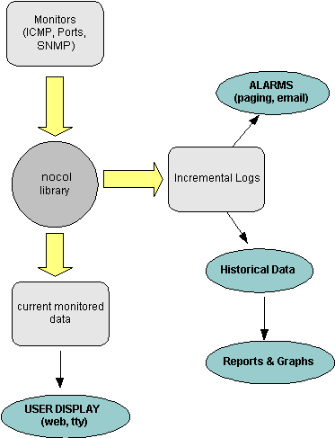
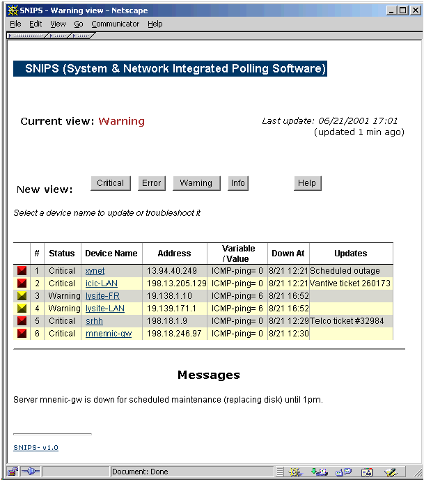
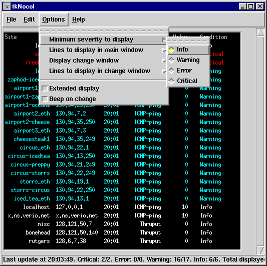

|
SNIPS- Design and
Internals |
||
|
|
||
|
Overview ¤ Design principles ¤ Architecture SNIPS C Library Monitors User Interfaces ¤ snipstv ¤ snipsweb ¤ tkSnips Reporting Future Work |
OverviewSNIPS is a system and network monitoring software which runs on Unix platforms and monitors reachability, ports, routes, system resources, etc. It is modular in design, and allows adding new monitors easily and without impacting other portions of the software- in fact, a large number of the monitors are contributed by various SNIPS users. The basic design principles behind SNIPS are relatively few:
The precursor to SNIPS (NOCOL) was developed in early 1990s when most of the commercial packages required pretty extensive hardware to run, whereas NOCOL could run on a very low end system, the monitors could be separated from the logging and reporting machine since they communicated over a network, and the datapoints collected were very small in number since they were only recorded when the severity of a device/variable changed. So, the disk space on a machine could vary from 10% to 60% full, and only one entry is logged since this would all be considered 'normal'. If the disk becomes 80% full, a 'warning' message is generated and another datapoint is logged. This simple approach gives amazingly small volumes of data, and yet presents a perfectly comprehensive (though quantized) report on the variables. The graphing function in SNIPS is done using RRDtool (same author as MRTG), which uses circular databases and aggregates historical data, thus preventing the databases from growing without bounds. The architecture of SNIPS itself is very simple- the monitors poll the devices and assign a threshold to each 'poll' (called an 'event'). These thresholds are user settable and vary from monitor to monitor (in fact, the core of the software does not care what is being monitored and does not store any intelligence about the variables). All intelligence of the variable being monitored and what conditions are to normal and abnormal is built into the monitor and their config files.  The monitor would then set:
and invoke a Snips API function. This writes out the current values, etc. to a realtime data file on disk (this contains the current state of any device/variable) and if the severity has changed, then this also gets logged to a incremental logging daemon (snipslogd). All user displays can then display the data from the realtime data directory, whereas the alarm and notification subsystem gets activated by the incremental 'snipslogd' process. The snipslogd process can filter events based on user defined criteria, and invoke an SMS pager, send email, perhaps even run some automated tests or open a trouble ticket. An 'event' is basically a unique tuple of device name + device address + variable name. Each event has the current data value of the variable being monitored, and also a threshold value corresponding to the current severity level. This is best understood by looking at the event data structure in the snips.h C include file. This simple architecture has proven to work very effectively in this application. The base system has not really changed since the software was initially written, but new monitors, displays, notification software is continually being added without any changes to the core system. The SNIPS C LibraryThe EVENT data structure for SNIPS has the following fields (presented in pseudocode here): #define DATA_VERSION 0x1char * sender /* monitor name */ char * device.name char * device.addr char * var.name u_long var.value u_long var.threshold char * var.units u_char mon day hour min u_char severity /* enum CRITICAL, ERROR, WARN, INFO */ u_char loglevel /* CRITICAL, ERROR, WARN, INFO */ u_char nocop /* state of device- UP/DOWN etc. */ u_char rating /* see below */ u_long op /* for internal monitor use */ u_long id /* unique event ID */ The 'rating' field is a sequence of 0 and 1s and shows the status of the device for the last N polls (the most recent poll is on the left). The 'op' field is for future internal use by the monitors, and the 'id' is a unique event identifier which changes each time the state of the event changes (not implemented at this time). A typical C monitor has the following layout:
The monitor needs to have 2 functions specific to the variable being monitored- read_config() and poll_devices(). It then sets the value of the global variables readconfig_func and polldevices_func to these two functions, and call snips_main(). That is all that is needed in most monitors. Deviations from the above process can be seen in the following monitors:
The MonitorsThe monitors collect variable values and compares to see if it exceeds any of the 3 thresholds (warning, error, critical- these thresholds are user configurable). This is all done using the snips library functions, so in effect, all the monitor needs to do is get the value for the variable being monitored and read the thresholds from a config file. The snips library ensures consistency in the way that the monitoring is processed by the rest of the system. Each monitor is unique in the way that it monitors its respective variable. The DNS monitor needs to make an authoritative DNS query to see if the dns server is configured properly, the Port monitor needs to connect to TCP or UDP ports to ensure that any processes are responding properly, and the SNMP monitor needs to monitor snmp variables using the SNMP protocol. The intelligence about the entity being monitored and how to monitor it lies strictly in the monitor- the rest of the snips subsystem is just expecting a device name, variable and its value. A fair amount of effort has gone into making the monitors very efficient where possible in order to allow them to scale to a large number of devices. Connectionless (UDP) monitors are specially well suited to using the select() system call so that many devices can be queried at the same time and the monitor then waits for the responses to come in. The other option was to fork multiple processes with a single parent and each process monitors one device. However, the level of scalability that could be achieved with the first method proved to be far more than what could be achieved with the forking method. To emphasize the above, consider 'pinging' 100 devices with 5 packets each, waiting 1 second for each response and 1 sec between each packet to the same host. If done serially, this would take at least 500 seconds for each pass. If we fork multiple processes to do it in parallel, this would take about 5 seconds, but we would have to fork 100 processes. The 'multiping' monitor could send out 1 packet to each of the 100 devices in about 10 seconds and then listen for the responses to come in- effectively taking about 15 seconds for the entire pass. Building this level of 'multi-tasking' is a lot more difficult in the TCP based services since it would require non-blocking I/O, but it it important to do this for monitors such as 'portmon'. All of these type of monitors (using select()) are limited by the MAXFD value (maximum open file descriptors that can be handled by the select() call) which was 64 in older OS versions, and is 1024 in newer Operating systems. This implies that a monitor using non-blocking async sockets can monitor these many devices at a time using a single process. The 'hostmon' monitor is an example of letting the remote hosts (that are being monitored) do the local data collection (i.e. distributing the 'time consuming' part to hostmon-clients). The 'hostmon' process runs on the snips monitoring host and simply takes all these data files and uses them as raw input for processing. In some cases, the monitors do not need any data other than what is in the snips data structure written to disk (the raw data), whereas in others they need to store ancillary variable and device specific information in memory. All possible efforts are made to avoid storing unnecessary data in memory and having 'bloated' monitoring processes. While developing new monitors, asynchronous socket polling should be used where possible, and they should store minimal information in process memory (such as hostname, etc.) to avoid memory bloat. User InterfacesThe user interfaces need to display the current state of the devices being monitored, and this 'current' data is stored on disk (in the 'data' directory). This allows any number of users and monitors to view the same consistent data, and run only one set of monitors (unlike some other systems which need a separate monitor for each display). The other diversion from traditional network monitoring packages is the displaying of monitored data using text lines and not a map or other graphical interface. The reason this approach was taken is that in practical experience, a network diagram was always done in some 'drawing' tool and the map on the NMS was not updated regularly. Even today, most network/lan diagrams are maintained in a tool such as Visio, and the NMS graphical interface is always a 'second' copy. This and being able to view line based data from any terminal weighed very heavily in favor of a non-graphical user interface. snipstv (Text based)snipstv (snips Text-View) is a simple Unix 'curses' based TTY interface. It reads the raw data from disk and formats it for displaying on the screen. It has limited intelligence, and its method of setting an alarm is when it sees a change in the number of 'down' items. snipsweb (Web)Originally contributed by a user and now part of the core distribution, this is a Web based frontend to the datafiles. It allows running CGI's and troubleshooting listed events and all the other benefits of a web interface.  This web interface automatically refreshes periodically, plays an audio clip if a device changes its severity level, etc. A 'status' message can be displayed next to each event which is inserted by any valid operator. Users are assigned access levels which controls how much information they can view or edit. tkSnips (Tcl/Tcl)This is a client-server application contributed by Lydia Leong. The tkSnips client connects to the ndaemon process on the host system, and displays the snips data in a window. This client can run on any OS that can support Tcl/Tk (PC, Mac, Unix environments).  This interface needs 'tixwish' on the system. Any number of clients can connect to the simple process (ndaemon) running on the snips host which sends data to all the clients periodically. Currently there is no access control configured on the ndaemon process, so this should be protected by a firewall, but this interface can be extended to add these features in the daemon if needed. ReportingThe monitors in SNIPS generate an event (logged to the snipslogd logging daemon) only when the severity of a variable changes (i.e. it goes from warning to error or from critical back to info. The thresholds for the various severities are defined by the user, and this tends to reduce the irrelevant data points from the collected data. This threshold triggered event generation allows a monitor to poll a device or variable as frequently as it likes (30 secs, 10 minutes), but it will generate a logging entry only if the variable crosses one of the thresholds. This approach of recording values only when the state changes also reduces the quantity of historical data significantly. Even though some granularity is lost, statistical analysis can easily be done on the collected data by using the time interval that a variable remained in a particular level. 'snipslogd' is similar to the Unix 'syslog' process- it allows piping the log message to an external program or writing to a file based on the monitor name. This forms the basis of invoking SMS scripts to do paging, sending email, automated insertion into trouble ticketing systems, auto problem analysis, etc.- the possibilities are virtually unlimited. Currently this system writes to flat files, but the data can easily be piped to a process that writes into a database. Note that the 'current' data that the monitors write to disk (the raw data which is displayed by the user interfaces) is overwritten in every pass by the monitor. Hence the size of those files is fixed and does not grow over time. Future WorkThe package does not interface to any database, there are some benefits to storing the raw (monitored) and snipslogd historical information in a database such as MySQL, etc. The main advantage is that this would allow retrieving all events for a device or address using an sql query. The monitors should automatically fork into multiple processes if their config file is very large and takes too long to do a single pass. Currently this is a manual process using the '-x' flag or creating symlinks to the monitors with different names. A Java based user interface along the same lines as tkSnips would allow running the display on any platform and one could build a lot of graphing, reporting functionality into the gui itself. Adding dependencies between variables and even devices and supress alarms based on this information would be very useful. In order to make this scalable, it would be useful to allow SNIPS running on different hosts to interact with each other. This is easily doable using the snipslogd daemon, since snipslogd can be enhanced to send an event to remote snipslogd's at other devices. The data can be isolated and referred to using the 'nodename' (or devicename) to prefix the data/events. |